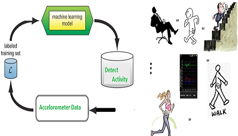

Human Activity Recognition using Accelerometer
Prashant Gautam, Roll No.: 150108023, Branch: EEE
;
Krishnakant Ahirwar, Roll No.: 150108018, Branch: EEE
;
Ripunjay Kumar, Roll No.: 150108028, Branch: EEE
;
Rahul Ramteke, Roll No.: 150108026, Branch: EEE
;
Abstract
In this project, our goal is to recognize patterns from the raw data of three axis accelerometer,
and extract useful information about the user’s daily activities. We used feature extraction such as
and selection techniques to process the raw data, and then applied various learning algorithms.
The results are quite impressive as compared to previous work, as we have significantly reduced the number of features required and therefore
made the process more practical on mobile devices, where energy consumption is a paramount concern
1. Introduction
Human activity recognition is an important with many application.
In this project We aim to develop a model that is capable of recognizing multiple sets of
daily activities like sitting,walking, climbing stairs under real-world conditions, using data
collection by a single triaxial accelerometer.
1.1 Introduction to Problem
Write something here.
1.2 Figure
Block diagram of the system. All images must be put in a Pictures folder. An example image

1.3 Literature Review
Write something here.
1.4 Proposed Approach
Describe your approach briefly here.
1.5 Report Organization
Write something here.
2. Proposed Approach
Write something here.
3. Experiments & Results
3.1 Dataset Description
The experiments have been carried out with a group of 4 volunteers within an age bracket of 19-21years.
Each person performed 3 activities (SITTING, WALKING, WALKING UPSTAIRS/DOWNSTAIRS) wearing a 3 axial accelerometer on the waist that captured 3-axial linear acceleration.
Notation of axis:
X axis -> front / backward motion
Y axis -> upward and downward motion
Z axis -> left / right motion
No. of dataset collected 9
Each data set includes listed 3 activities having time interval of 150 seconds for every activity.
3.2 Discussion
Write something here.
4. Conclusions
4.1 Summary
Write something here.
4.2 Future Extensions
1) learning to recognize additional activities, such as bicycling and car-riding,
2) obtain ingtraining data from more users with the expectation that this willimprove our results,
3) generating additional and more sophisticated features when aggregating the raw time-series data
*activity recognition can be highly accurate over 90% of the time.
*these activities can be recognized quickly, since each example is generated from only 10 seconds worth of data.